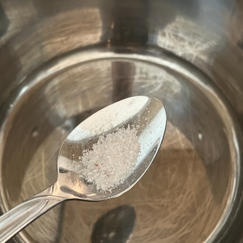
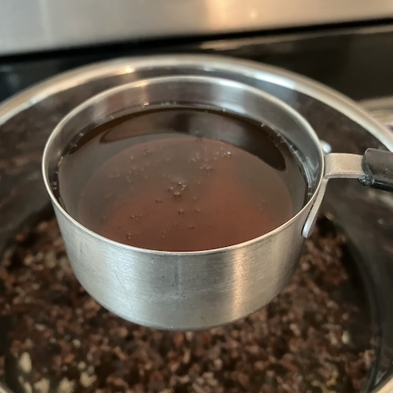
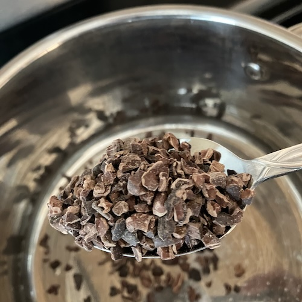
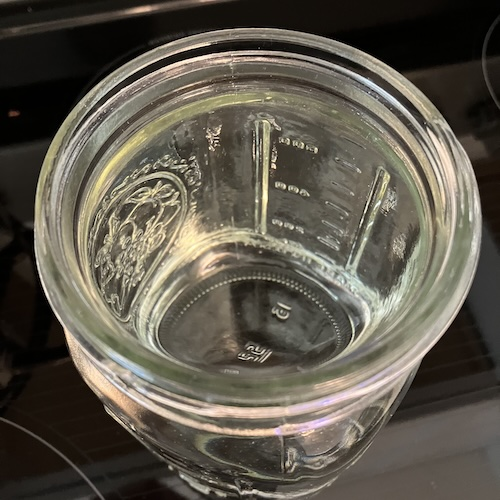
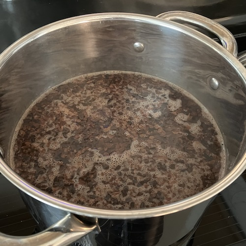

Cacao brew
My family and I enjoy drinking cacao brew as a special treat.
I wanted to share the recipe so others can enjoy it as well:
Result
Ingredients
 1/8 teaspoon of salt  1/3 cup organic maple syrup  6 tablespoons of cacao nibs  33oz (4.125cups) filtered water
Steps
- Mix salt, syrup, cacao nibs, and water together in a pot
 When boiling the cacao nibs will turn a darker brown. - Cook on high heat
- Bring to a boil
- Once boiling remove from heat
- Let it cool for 5 minutes
- Strain out nibs and serve